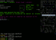
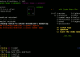

yuxtapa is a console-based real-time multiplayer game taking influences from roguelike games and some teamplay focused first-person-shooter games. It has a loose fantasy setting, but no actual background story.
The game features randomly generated maps and eleven quite different character classes to choose from. The focus is very much on teamplay and cooperation.
Games that have influenced the design of yuxtapa and deserve a special mention:
Screenshots (click to see full view):
|  | Intermission screen, showing a condensed view of the next map to play. |
| A wizard doing havoc with homing magic missiles; this shot taken with xterm. | |
| Intense melee in an unremarkable dungeon. | |
|  | The "limbo menu". |
| Here a spectator view with the PC titles turned on. |
yuxtapa is available only for Linux-like operating systems (with some work, you should be able to compile it on OSX; see the Getting and installing page). It is open source and actively developed.
If you are interested, your next step in this manual is the Getting and installing page.
{kind=link}
{kind=link}
{kind=link}
{kind=link}
{kind=link}